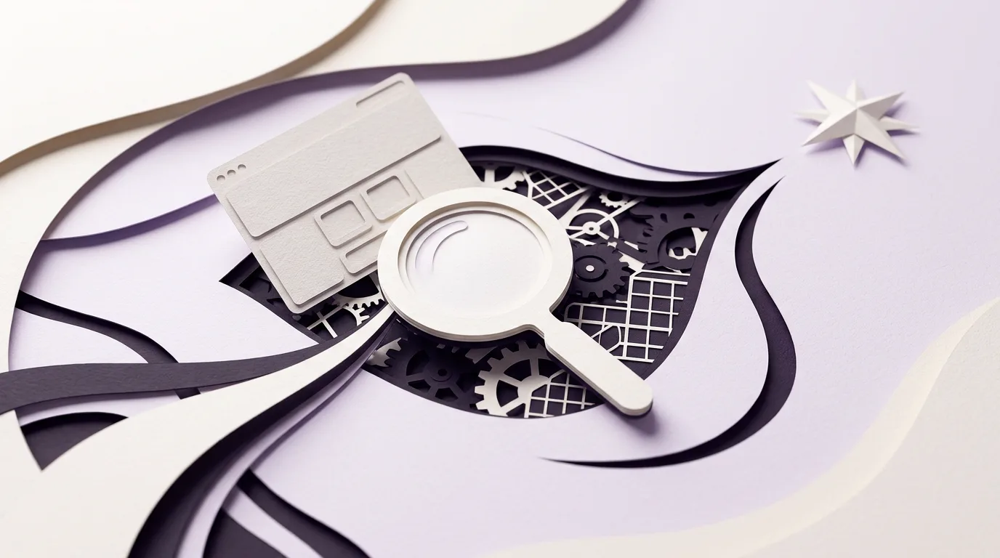

Cara menganalisis desain website seperti seorang profesional adalah dengan menghentikan kebiasaan menilai halaman web hanya dari selera "bagus atau jelek", lalu mulai melacak dua hal secara berurutan: reaksi emosi di dalam kepalamu sendiri saat memakai halaman tersebut (pelajaran bagian pertama Extra Credits) dan niat tersembunyi serta hubungan antarsistem yang dibangun oleh perancangnya di balik layar (pelajaran bagian kedua). Ketika kamu menguasai cara pandang dua lapis ini, setiap website yang kamu buka setiap hari otomatis berubah menjadi laboratorium belajar gratis yang membuatmu tidak lagi bingung saat harus merancang halaman web sendiri dari nol.
Banyak pemula yang baru belajar membuat website atau mendalami bidang UI dan UX sering mengeluhkan kebuntuan yang sama. Mereka sudah mengikuti saran di internet untuk "rajin melihat referensi desain setiap hari", mengumpulkan ratusan tangkapan layar situs keren di folder komputer, bahkan meniru bentuk tombol dan warna dari situs-situs terkenal. Namun, begitu semua elemen yang mereka tiru itu digabungkan ke dalam proyek website mereka sendiri, hasilnya justru terasa kaku, semrawut, dan membingungkan pengunjung.
Mengapa meniru tampilan situs yang bagus sering kali gagal menghasilkan website yang nyaman dipakai? Jawabannya terletak pada cara kita melihat referensi tersebut. Selama ini kita masih melihat website dengan mata seorang penonton pasif, bukan mata seorang perancang. Pada bulan Februari 2011, penulis skenario game James Portnow dan animator Daniel Floyd melalui kanal edukasi Extra Credits merilis dwilogi video legendaris berjudul Playing Like a Designer (Bagian I dan Bagian II). Meskipun awalnya ditujukan bagi calon pembuat video game, prinsip yang mereka ajarkan tentang cara membedah pengalaman dan menganalisis sistem ternyata merupakan salah satu panduan paling jernih untuk siapa saja yang ingin merancang website.
Pelajaran Bagian Pertama tentang Mengamati Pengalaman Sendiri dan Berhenti Menjadi Pengunjung Pasif
Pada artikel sebelumnya mengenai bahaya terlalu banyak pilihan (choice paralysis) di halaman web, kita sempat menyinggung sedikit gagasan pembuka dari video pertama Extra Credits yang berjudul Playing Like a Designer - I: Examine Your Experiences. Namun, jika kita kupas video bagian pertama ini secara utuh, pesan utamanya jauh lebih mendalam: modal pertama untuk menjadi perancang yang tajam bukanlah menghafal ratusan istilah buku teks, melainkan membelah kesadaranmu menjadi "pemakai" sekaligus "pengamat" setiap kali kamu menyentuh sebuah produk.
Bayangkan perbedaan antara penonton biasa dan seorang pesulap saat menyaksikan pertunjukan sulap di atas panggung. Penonton biasa duduk untuk terhibur, terpukau ketika burung merpati muncul dari balik topi, lalu bertepuk tangan dan pulang. Sebaliknya, seorang pesulap yang duduk di kursi penonton tidak hanya menikmati hiburannya. Matanya sibuk mengamati ke arah mana tangan kiri sang pesulap mengalihkan perhatian penonton saat tangan kanannya mengambil sesuatu dari balik meja.
Di dunia website dan aplikasi, sembilan puluh sembilan persen pengguna internet bersikap seperti penonton biasa. Mereka membuka situs toko daring untuk membeli sepatu, membaca berita, atau membayar tagihan, lalu menutup layar begitu urusannya selesai. Jika kamu ingin bisa membuat website yang hebat, kamu harus mulai duduk seperti pesulap tadi. Batas perumpamaan ini terletak pada tujuannya: seorang pesulap menyembunyikan gerakan tangannya untuk mengecoh penonton, sedangkan seorang perancang web menyembunyikan kerumitan sistem di balik layar agar pengunjung tidak perlu memeras otak saat mencari tombol yang mereka butuhkan.
Membedah Puncak Emosi di Layar serta Membedakan Rasa Frustrasi yang Buruk dan yang Disengaja
Bagaimana cara melatih diri agar bisa mengamati pengalaman sendiri saat membuka sebuah website? Dalam video bagian pertama, Extra Credits menyarankan kita untuk memasang "alarm pendeteksi emosi" di dalam kepala kita sendiri. Selama kamu berselancar di sebuah halaman web dan semuanya berjalan lancar, biarkan dirimu mengalir seperti pengunjung biasa. Akan tetapi, begitu muncul lonjakan emosi sekecil apa pun, entah itu rasa kagum, lega, bosan, ragu, atau kesal, segera tekan tombol jeda di pikiranmu!
Jangan biarkan perasaan itu lewat begitu saja. Tanyakan langsung pada dirimu sendiri: "Tunggu sebentar, apa yang baru saja dilakukan oleh website ini sampai perasaanku berubah?" Ketika kamu membiasakan diri melacak penyebab emosi tersebut, kamu akan menemukan perbedaan menarik yang ditekankan oleh Extra Credits, yaitu perbedaan antara friksi yang buruk (bad frustration) dan friksi yang disengaja (intentional challenge):
- Friksi Buruk akibat Desain yang Ceroboh: Dalam video game, friksi buruk terjadi ketika karaktermu mati bukan karena musuhnya pintar, melainkan karena tombol lompatnya macet atau sudut kameranya terhalang tembok. Di dalam website, friksi buruk terjadi ketika pengunjung sudah capek mengisi sepuluh kolom formulir pendaftaran, lalu saat menekan tombol kirim muncul pesan kesalahan dan seluruh isian tadi terhapus bersih kembali menjadi kosong. Rasa kesal ini murni kesalahan perancang yang merusak kepercayaan pengguna.
- Friksi yang Disengaja demi Melindungi Pengguna: Dalam game petualangan atau horor, pembuatnya sengaja membatasi jumlah peluru agar pemain merasakan ketegangan dan berhati-hati mengambil langkah. Dalam desain website, sebagaimana yang pernah kita bahas pada artikel kapan pengguna justru butuh jeda untuk berpikir, perancang yang matang sengaja menambahkan "hambatan kecil" pada tindakan berbahaya. Misalnya, meminta pengguna mengetik ulang nama proyek sebelum menekan tombol "Hapus Permanen", atau memberi jeda konfirmasi rincian rekening sebelum tombol "Kirim Uang" bisa ditekan.
Tanpa kebiasaan memeriksa pengalaman sendiri, seorang pemula sering kali menyamaratakan keduanya. Di titik inilah letak batas perbedaan antara video game dan website yang wajib kamu sadari: pemain membuka game untuk mencari tantangan dan menghabiskan waktu luang, sedangkan pengunjung membuka website untuk menyelesaikan urusan secepat mungkin. Oleh karena itu, sementara game sengaja memasang rintangan di sepanjang permainan agar terasa seru, sebuah website hanya boleh memasang hambatan (friksi disengaja) pada keputusan yang berisiko merugikan pengguna.
Menembus Ilusi Tampilan Luar dan Menyadari Bahwa Kebiasaan Kita Bukanlah Standar Semua Orang
Masih di bagian pertama, James Portnow dan Daniel Floyd memperingatkan dua perangkap besar yang sering membuat pengamatan seorang desainer pemula meleset jauh dari kenyataan.
Perangkap pertama adalah silau pada kemewahan kulit luar (Surface Spectacle). Di dunia game, pemain awam mudah tertipu oleh kilau grafis tiga dimensi yang tampak nyata, padahal permainannya sendiri membosankan. Di dunia desain web, penyakit ini persis dialami oleh pemula yang terlalu sering melihat pameran visual di situs penghargaan desain: mereka terpukau pada kursor yang mengeluarkan percikan cahaya, teks raksasa yang berputar saat layar digulir, atau efek kaca buram yang berlapis-lapis. Ketika kamu belajar melihat seperti desainer, kamu melatih matamu untuk mengupas kulit kosmetik tersebut dan bertanya: "Kalau semua animasi dan hiasan warna di halaman ini saya matikan sekarang, apakah pengunjung masih tahu di mana letak tombol belinya dan apa inti layanan yang ditawarkan?"
Perangkap kedua adalah buta terhadap kebiasaan diri sendiri (Personal Bias). Karena seorang pembuat website sudah menghabiskan waktu ribuan jam di depan layar laptop dengan koneksi internet cepat, ia sering lupa bagaimana rasanya menjadi orang awam. Ia menganggap semua orang pasti paham bahwa garis tiga di pojok atas adalah tombol menu, atau mengira semua orang nyaman membaca huruf abu-abu tipis berukuran kecil. Oleh sebab itu, Extra Credits menyarankan satu latihan yang sangat berharga: amati bagaimana orang lain di sekitarmu memakai produk digital! Duduklah diam-diam tanpa memberi petunjuk saat orang tuamu, temanmu yang bukan orang IT, atau pelanggan baru mencoba memakai sebuah website. Melihat di titik mana jari mereka ragu-ragu selama tiga detik akan mengajarkanmu lebih banyak ilmu desain dibandingkan membaca sepuluh buku teori.
Pelajaran Bagian Kedua tentang Cara Membongkar Sistem di Balik Layar dan Menebak Niat Pembuatnya
Jika video bagian pertama melatih kita mengamati apa yang terjadi di dalam diri kita saat memakai sebuah produk, maka video kelanjutannya yang berjudul Playing Like a Designer - II: How to Analyze Game Design membawa kita melangkah ke tahap yang lebih tajam: bagaimana cara membongkar mesin di balik produk tersebut secara objektif menggunakan kerangka analisis yang terstruktur.

Di bagian kedua ini, Extra Credits menegaskan bahwa kalimat seperti "Game ini seru banget" atau "Website ini tampilannya keren" sama sekali tidak berguna bagi seorang perancang. Agar bisa belajar dari karya orang lain, kita wajib melakukan apa yang di dunia rekayasa disebut sebagai Reverse-Engineering Developer Intent, yaitu menebak mundur apa niat dan masalah yang sedang coba diselesaikan oleh pembuat aslinya.
Pertanyaan Kunci Saat Membedah Website Orang Lain: Jangan berhenti pada pertanyaan "Apakah bagian ini kelihatan bagus?", tetapi tanyakanlah: "Masalah apa yang sedang dihadapi oleh pembuat website ini, mengapa mereka memilih menaruh elemen ini di sini, dan apakah solusi mereka berhasil?"
Sebagai contoh, ketika kamu membuka halaman pembayaran sebuah toko daring besar lalu melihat mereka menghilangkan seluruh menu navigasi atas dan menyisakan logo toko serta kolom alamat, jangan berhenti pada catatan "oh, halamannya polos". Tebaklah niat di balik keputusan perancangnya: "Pembuat halaman ini sengaja menyembunyikan menu atas supaya pembeli yang sudah mau membayar tidak tergoda mengklik halaman lain dan batal menyelesaikan transaksi!" Begitu kamu terbiasa menebak alasan di balik setiap letak tombol, kamu tidak lagi meniru secara buta, melainkan memahami logika di balik keputusannya.
Mengapa Mencontek Potongan Desain Tanpa Memahami Ekosistemnya Akan Melahirkan Website Tambal Sulam
Salah satu pelajaran paling berharga dari Playing Like a Designer - II yang sangat relevan untuk pembuatan website adalah konsep Interlocking Systems (sistem yang saling mengunci). Dalam sebuah permainan, tidak ada satu pun fitur yang hidup sendirian di ruang hampa. Jika seorang pembuat game mengubah kecepatan lari karakter utama menjadi dua kali lipat lebih cepat, maka ukuran peta yang tadinya terasa luas mendadak menjadi sempit, musuh menjadi terlalu mudah dihindari, dan waktu permainan menjadi terlalu singkat. Satu perubahan kecil akan mengguncang seluruh bagian lainnya.
Sekarang perhatikan kesalahan paling umum yang dilakukan pembuat website pemula ketika mereka tidak memahami prinsip sistem yang saling mengunci ini: mereka melakukan desain tambal sulam (sering dijuluki sebagai Frankenstein Design).
Saat diminta membuat sebuah situs bisnis, sang pemula membuka lima situs berbeda lalu memotong bagian-bagian yang menurutnya keren:
- Ia meniru bagian pembuka (hero section) dari situs produk teknologi mewah seperti Apple yang sangat minimalis, penuh ruang kosong, dan hanya berisi satu foto besar tanpa penjelasan panjang.
- Tepat di bawahnya, ia menempelkan tabel perbandingan harga yang dicontek dari situs layanan penyewaan server yang sangat padat, penuh angka teknis, dan memiliki lima kolom berhimpitan.
- Di bagian pojok kanan bawah, ia memasang tombol pop-up obrolan dan spanduk diskon berkedip-kedip yang ia tiru dari situs belanja marketplace.
Mengapa ketika ketiganya disatukan, website tersebut langsung terasa aneh dan murahan? Karena sang pemula mencabut elemen-elemen itu dari ekosistem aslinya! Situs Apple berani memakai halaman pembuka yang minim teks karena merek mereka sudah dikenal seluruh dunia dan pengunjungnya memang mencari kemewahan visual. Sementara itu, situs marketplace sengaja tampil padat karena pengunjungnya datang dengan niat membandingkan harga barang harian yang sudah mereka pahami fungsinya. Ketika kamu menganalisis website seperti desainer sesuai pesan Extra Credits Bagian II, kamu akan selalu memeriksa bagaimana tipografi, jarak spasi, warna tombol, dan gaya bahasa saling menopang satu tujuan yang sama, bukan sekadar mencomot komponen yang sedang viral.
Rahasia Belajar Lebih Cepat dari Website yang Buruk ketika Desain yang Bagus Justru Tidak Terlihat
Jika kamu bertanya kepada para perancang senior tentang situs apa yang harus dianalisis untuk melatih kepekaan desain, kebanyakan orang akan menyuruhmu mempelajari situs-situs kelas dunia yang sudah memenangkan banyak piala. Namun, di dalam Playing Like a Designer - II, terdapat satu nasihat brilian yang membalik kebiasaan tersebut: kamu justru akan belajar jauh lebih cepat dan lebih banyak dengan menganalisis karya yang buruk, gagal, atau berasal dari bidang yang tidak kamu sukai!
Mengapa demikian? Pakar psikologi desain kognitif Don Norman dalam bukunya yang terkenal, The Design of Everyday Things, menjelaskan bahwa desain yang sangat bagus itu sifatnya tidak terlihat (Invisible Design). Ketika sebuah website dirancang dengan sangat sempurna, semua alur kliknya terasa begitu alami sampai-sampai pengunjung menyelesaikan urusannya tanpa sadar bahwa ada kerja keras perancang di balik layar. Karena jahitannya begitu rapi dan tersembunyi, pemula sering kali kesulitan melihat trik apa yang sebenarnya membuat situs bagus itu bekerja.
Sebaliknya, ketika kamu membuka sebuah website yang buruk, kaku, atau membingungkan, seluruh "jahitannya yang rusak" langsung mencuat ke permukaan! Kamu bisa langsung melihat dengan mata telanjang: "Oh, bagian ini bikin pusing karena judul dan teks isinya punya ukuran huruf yang sama besar! Bagian ini bikin ragu karena tombol batalkan warnanya justru lebih terang daripada tombol simpan!"
Selain menganalisis produk yang kurang rapi, Extra Credits juga mendorong kita untuk keluar dari zona nyaman. Jika kamu selama ini hanya suka melihat desain website portofolio kreatif atau kafe kekinian, cobalah sesekali membedah situs pendaftaran rumah sakit, portal administrasi pemerintahan, atau katalog toko bahan bangunan. Menganalisis bagaimana situs-situs di luar seleramu itu berusaha menyajikan informasi yang rumit kepada masyarakat luas akan memperkaya kotak peralatan mentalmu (mental toolkit) saat menghadapi klien atau proyek nyata.
Bagian Terbaik yang Bisa Diambil untuk Membuat Desain Website Lewat Kerangka MDA dan Pengajaran Tanpa Teks
Lalu, jika kita rangkum seluruh isi video Bagian I dan Bagian II dari Extra Credits tersebut, bagian konkret apa saja dari ilmu perancangan video game yang bisa langsung kita ambil dan terapkan saat merancang sebuah website?
Setidaknya ada dua harta karun besar dari dunia desain game yang bisa membuat kualitas desain website buatanmu melompat jauh lebih matang: cara memetakan jembatan antara kode dan perasaan lewat Kerangka MDA, serta teknik memandu pengunjung baru tanpa buku panduan lewat Silent Onboarding.
Jembatan Mechanics Dynamics dan Aesthetics yang Menjelaskan Perbedaan Cara Pandang Pembuat dan Pengunjung
Di dalam video Extra Credits, kita diajak menghubungkan titik-titik antara "aturan teknis yang dibuat perancang" dan "pengalaman emosi yang dirasakan pengguna". Dalam literatur ilmiah desain interaksi dan game, hubungan ini dirumuskan secara sangat rapi oleh tiga peneliti bernama Robin Hunicke, Marc LeBlanc, dan Robert Zubek pada tahun 2004 melalui makalah terkenal mereka yang memperkenalkan MDA Framework (singkatan dari Mechanics, Dynamics, dan Aesthetics).
Kerangka MDA ini membagi setiap produk interaktif (termasuk website dan aplikasi) ke dalam tiga lapisan yang saling terhubung:
- Mechanics (Aturan & Komponen Dasar): Ini adalah bahan baku teknis yang diatur langsung oleh pembuat web, seperti ukuran huruf CSS, warna tombol, jumlah kolom formulir, kecepatan muat halaman, dan struktur token sistem desain.
- Dynamics (Perilaku Saat Dipakai): Ini adalah interaksi yang muncul ketika jari dan mata pengunjung mulai menyentuh komponen tadi di layar nyata. Misalnya: mata pengunjung otomatis melirik ke kotak harga yang paling kontras, atau pengunjung menggulir halaman dengan cepat melewati paragraf yang terlalu tebal.
- Aesthetics (Rasa & Emosi yang Muncul): Ini adalah perasaan akhir yang tumbuh di hati pengunjung setelah berinteraksi, seperti rasa tenang, yakin bahwa toko ini terpercaya, merasa pintar karena mudah menemukan barang, atau justru merasa tertekan dan buru-buru.
Rahasia Terbesar Kerangka MDA: Seorang Perancang (Desainer) bekerja dari kiri ke kanan: ia mengatur Mechanics (kode dan tata letak) untuk menciptakan Dynamics (alur klik) demi melahirkan Aesthetics (rasa percaya). Sebaliknya, seorang Pengunjung (User) merasakan dari kanan ke kiri: mereka merasakan Aesthetics (emosi nyaman atau kesal) terlebih dahulu di detik pertama, sebelum menyadari Dynamics dan Mechanics di baliknya!
Mulailah membaca diagram di atas dari kotak gelap nomor 3 (Aesthetics) di sebelah kanan, lalu ikuti garis putus-putus ke arah kiri menuju kotak Dynamics dan Mechanics. Satu hal utama yang perlu kamu perhatikan adalah arah panah analisis dari dwilogi Extra Credits selalu bergerak berlawanan arah dengan urutan kerja pembuat website: pengunjung merasakan emosi di ujung kanan terlebih dahulu (fokus Bagian I), kemudian pengamat melacak mundur ke kiri untuk menemukan aturan komponen apa yang memicunya (fokus Bagian II).
Selain kerangka MDA, ilmu desain game juga menyumbangkan teknik Silent Onboarding (pengajaran tanpa teks penjelasan panjang). Dalam game klasik seperti Super Mario Bros (World 1-1) atau Portal, pemain tidak pernah disuruh membaca sepuluh halaman buku peraturan sebelum bermain. Perancangnya sengaja meletakkan satu rintangan kecil yang aman di layar pertama agar pemain belajar cara melompat secara naluriah sambil berjalan. Prinsip yang sama persis bisa kamu ambil untuk desain website: jangan pernah menyambut pengunjung dengan layar panduan (pop-up tutorial) berlapis-lapis yang menyuruh mereka membaca cara memakai situsmu! Rancanglah halaman depan yang begitu jelas hierarki tombolnya dan berikan contoh isian langsung di dalam kotak pencarian (placeholder yang informatif), sehingga pengunjung langsung paham cara memakai situsmu sejak klik pertama tanpa perlu berpikir.
Tabel Terjemahan Ilmu Game Design ke Dalam Praktik Merancang Website Sehari-hari
Agar kamu bisa langsung menggunakan kacamata analisis dari kedua video Extra Credits ini saat merancang atau memperbaiki halaman web, perhatikan tabel pemetaan praktis berikut:
| Konsep di Video Extra Credits | Cara Kerja di Dunia Video Game | Terjemahannya dalam Desain Website | Pertanyaan Audit Saat Membuat Web |
|---|---|---|---|
| Examine Your Experiences (Lacak Emosi) | Menangkap detik saat pemain merasa bosan, tegang, atau kesal ketika melewati sebuah rintangan. | Menangkap detik saat mata kita sendiri merasa lelah, ragu mengklik, atau malas membaca halaman web. | "Di bagian halaman mana jari pengguna mulai berhenti menggulir dan merasa ragu?" |
| Reverse-Engineering Intent (Tebak Niat) | Menebak mengapa pembuat game meletakkan titik simpan (checkpoint) tepat sebelum ruangan bos. | Menebak mengapa sebuah situs menaruh garansi uang kembali tepat di bawah tombol "Beli Sekarang". | "Ketakutan pengunjung apa yang sedang coba ditenangkan oleh elemen di bagian ini?" |
| Interlocking Systems (Ekosistem Mengunci) | Mengubah kecepatan senjata akan memengaruhi ukuran peta, jumlah musuh, dan keseimbangan permainan. | Mengubah ukuran huruf atau menambah menu baru akan memengaruhi kepadatan layar HP dan fokus tombol utama. | "Jika saya menambahkan fitur baru ini, apakah elemen penting di sebelahnya jadi tenggelam?" |
| Silent Onboarding (Belajar Tanpa Teks) | Mengajarkan pemain cara melompat lewat tata letak level pertama yang aman tanpa buku petunjuk. | Membuat struktur halaman arahan dan tombol yang langsung jelas fungsinya tanpa perlu teks petunjuk panjang. | "Bisakah orang awam menyelesaikan tujuannya di halaman ini dalam 10 detik tanpa bertanya?" |
| Pacing & Rest Beats (Ritme & Jeda) | Memberi ruang istirahat yang tenang sesudah pertarungan sengit agar pemain tidak kelelahan mental. | Memberikan ruang kosong (white space) yang lega di antara seksi informasi yang padat. | "Apakah halaman ini terus-menerus membombardir mata pengunjung tanpa memberi ruang bernapas?" |
Ada satu batasan penting (boundary condition) yang perlu kamu jaga: jangan menyalakan kacamata analisis ini secara berlebihan ketika kamu baru saja mulai menggambar sketsa kasar pertamamu! Jika kamu terlalu sibuk mengkritik setiap garis pada lima menit pertama proses kreatif, tanganmu justru akan kaku dan takut memulai. Biarkan ide kasarmu tertuang dulu di atas kertas atau kanvas, barulah gunakan pisau analisis dari Extra Credits ini saat kamu meninjau ulang hasil drafmu atau saat mempelajari karya orang lain.
Melatih Kebiasaan Membawa Buku Catatan Pengamat Saat Berselancar di Internet Hari Ini
Pelajaran terbesar dari dwilogi Playing Like a Designer Bagian I dan Bagian II adalah bahwa keahlian merancang yang hebat tidak jatuh dari langit lewat bakat bawaan, melainkan tumbuh dari kebiasaan kecil yang dilakukan berulang-ulang setiap hari. Mulai hari ini, kamu tidak perlu menunggu sampai mendapat proyek besar untuk melatih otot desainmu, karena setiap halaman web yang kamu buka di ponsel maupun laptop adalah ruang kelas yang hidup.
Untuk mengubah ilmu dari kedua video ini menjadi keahlian nyata di tanganmu, cobalah lakukan latihan 15 menit Bedah Desain (Design Teardown) ini sekarang juga. Siapkan satu halaman catatan kosong di aplikasi catatanmu, lalu bukalah satu website yang paling sering membuatmu kesal (misalnya situs portal layanan lama atau toko yang membingungkan) dan satu website yang paling nyaman kamu pakai. Tuliskan masing-masing tiga kalimat pengamatan menggunakan rumus sederhana ini: "Saat membuka bagian [X], saya merasakan emosi [Y], karena perancangnya mengatur elemen [Z], dan jika saya harus memperbaikinya hari ini, langkah pertama yang akan saya ubah adalah..." Lakukan kebiasaan kecil ini cukup dua kali seminggu, maka dalam satu bulan ke depan, matamu tidak akan pernah lagi melihat sebuah website dengan cara yang sama.
Referensi
- Extra Credits (Portnow, J., & Floyd, D.). (2011, 2 Februari). Playing Like a Designer - I: Examine Your Experiences. YouTube. https://www.youtube.com/watch?v=_HmtmoGwpZc
- Extra Credits (Portnow, J., & Floyd, D.). (2011, 9 Februari). Playing Like a Designer - II: How to Analyze Game Design. YouTube. https://www.youtube.com/watch?v=6op8eV5OBwE
- Hunicke, R., LeBlanc, M., & Zubek, R. (2004). MDA: A Formal Approach to Game Design and Game Research. Proceedings of the AAAI Workshop on Challenges in Game AI, 1722(1), 1-5. https://users.cs.northwestern.edu/~hunicke/MDA.pdf
- Norman, D. A. (2013). The Design of Everyday Things: Revised and Expanded Edition. Basic Books.
- Schell, J. (2008). The Art of Game Design: A Book of Lenses. Morgan Kaufmann Publishers.